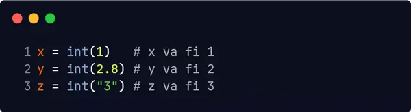
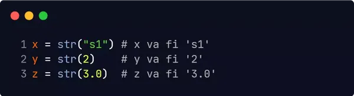

Pot exista momente în care doriți să specificați tipul de date pentru o variabilă. Acest lucru se poate face cu ajutorul casting-ului. Python este un limbaj bazat pe OOP și, ca atare, folosește clase pentru a defini tipurile de date, inclusive tipurile primitive.
Casting-ul in Python se poate face folosind constructor functions (funcții de constructor):
int() - construiește un număr întreg dintr-un număr întreg, un număr cu virgulă
flotantă (prin eliminarea tuturor zecimalelor) sau un șir de caractere (cu condiția ca șirul să
reprezinte un număr întreg).
float() - construiește un număr float dintr-un număr întreg (adaugând zecimale .00), un
număr cu virgulă flotantă sau un șir de caractere (cu condiția ca șirul să reprezinte un număr întreg
sau cu virgulă flotantă).
str() - construiește un șir dintr-o mare varietate de tipuri de date, inclusiv șiruri de
caractere, numere întregi, sau cu virgulă flotantă.
Numere întregi:
Numere float:
Șiruri de caractere:
